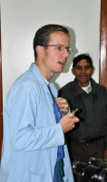
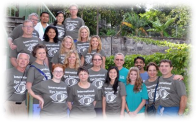
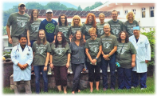

International Eye Institute, Inc.
International Eye Institute, Inc. is a private non-profit 501(c)(3) tax-exempt corporation. Our primary purpose is to provide adult and pediatric medical and surgical eye care to people with little access to these services.

Although our eye work began in the early 1990s, we only started keeping track of statistics in 2005. During that time, we have provided care to over 10,000 patients including over 2000 surgical procedures. Our volunteers have donated over 20,000 hours of their time to provide this quality eye care. We have provided over 3 MILLION dollars worth of medical and surgical services (a conservative estimate) to our patients who would not have had care other wise. We're proud of this legacy and excited to continue to volunteer our services, with your support.
We have worked in collaboration with a number of hospitals and clinics, mostly in Latin America. Our primary focus over the past decade has been to develop and strengthen our relationship with Hospitalito and the people of Lago Atitlan. But we have also worked with Hospital de la Familia (HDLF) in Nuevo Progreso, Guatemala as well as locations in Honduras, Peru and Nicaragua.

Each year IEI sends at least 2 teams to Hospitalito, in Santiago Atitlan, Guatemala. These teams consist of ophthalmic surgeons, nurses, optometrists and staff who volunteer their time, talents and money to provide quality eye care to Guatemalans who would otherwise have little or no access to care. Our teams see close to 1000 patients per year and we erform around 150 surgeries. The majority of surgeries are sight-restoring, and often life-changing, cataract surgeries with new lens implants. This adds up EACH YEAR to over $300,000 worth of donated medical and surgical care for these patients.
Leveraged Care

The vast majority of our supplies, equipment, travel and time are donated by our medical volunteers and medical suppliers. So we are able to leverage your donated dollars to provide an incredible return on your investment in us! Our teams really do transform the lives of these patients and impact each of their families in a profoundly beneficial way. We, and THEY, are grateful for your generous support.
"Your work is a testament to all humanitarian groups who aspire to do so much to improve the lives of others. Kindness, goodness, decency will not expire in this world while we have people like you who are accomplishing wonderful results with your talents. All tributes are yours."
Anonymous Donor